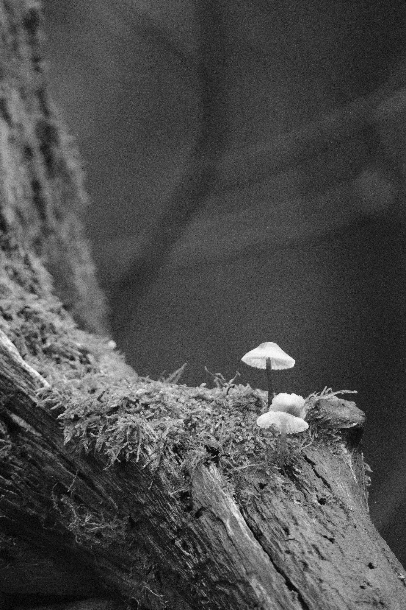
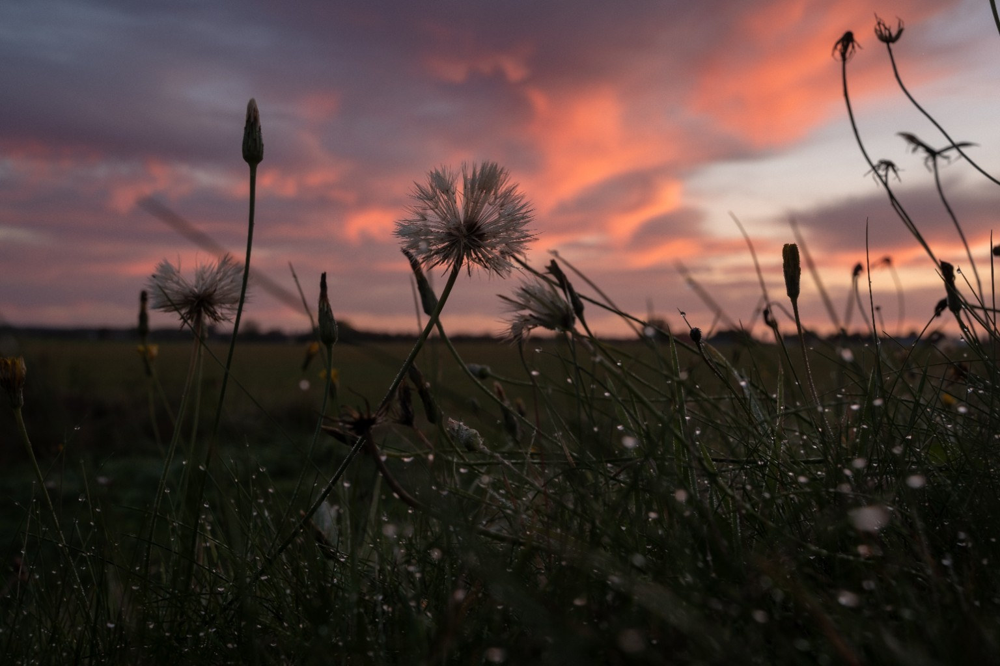

Felix Wach
Fotografie · WACH RECORDS
WACH RECORDS · NATURFOTOGRAFIE
Natur vor der Tür.
Ich bin Felix Wach. Mit WACH RECORDS halte ich Landschaften, Tiere und stille Details aus der Natur fest – direkt vor der Haustür und oft erst auf den zweiten Blick sichtbar.



WACH RECORDS versteht Fotografie als Beobachtung: nah genug für Details, offen genug für Zusammenhänge.
Publikation
WACH RECORDS
Leiferde und das Viehmoor 2025
Eine fotografische Publikation von Felix Wach. Die erste Ausgabe verbindet ausgewählte Arbeiten in einem gedruckten, kuratierten Format.
Leiferde und das Viehmoor 2025 →
Erhältlich auf Anfrage
Fotografien · Zines · Kalender
Ausgewählte Fotografien, Zines und Kalender können auf Anfrage erworben werden.
Anfrage →